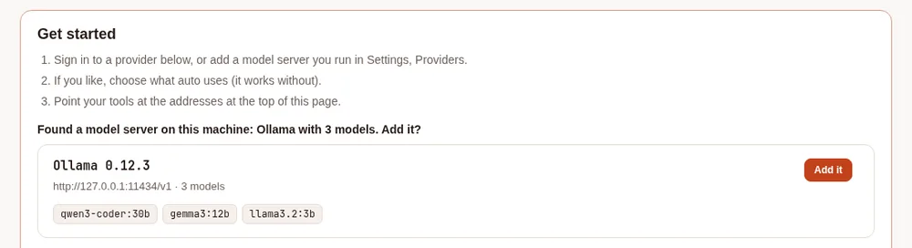
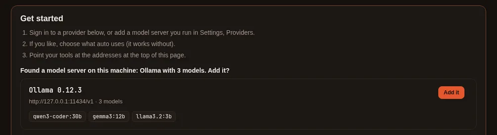

The proxyModels and providers9 min read
Connect a model server #
On this page
Any server that speaks the OpenAI API can be a provider: Ollama, LM Studio, oMLX, Lemonade, Unsloth Studio, vLLM, llama.cpp, an MLX server, or another. Add one from the setup page in three clicks or by editing the configuration file, and every tool that uses the proxy can use its models, with the proxy's fallbacks, budgets and usage log.
In plain words #
- What it is. A model server is a program on your computer or network that runs models itself: Ollama, LM Studio, oMLX, Lemonade, Unsloth, vLLM, llama.cpp and others.
- Why you want it. Your own models cost nothing per request, and your code never leaves your machine.
- The clicks. On the setup page, Providers, Find local models: every server running on this machine is listed with Add it. For one elsewhere, + Add provider, pick the type, Detect models, and save. It applies at once.
From the setup page #
- Open
http://127.0.0.1:11539, go to Providers and choose + Add provider. - Pick the type. The usual address for that server is filled in.
- Press Detect models to list what the server has loaded, then save.
It applies immediately. No restart is needed.
Find the servers already running #
If a model server is already running on this computer, the proxy can find it and add it for you.
- On the setup page: open Providers and press Find local models. Each server found is listed with its models. Press Add it to add one.
- On a first run: the welcome on the Overview shows, in its first step, any server that is running and not added yet. For example: "Found a model server on this machine: Ollama with 3 models. Add it?" If none is found, the step looks the same as before.
- In a terminal:
maple-proxy providers discoverlists what is running. Add--addto add each server that is not a provider yet, or--jsonfor a script. maple-harness doctoradds a line when a server is running but not added. When there is none, it says nothing about it.


It looks at these addresses:
| Server | Address | Added as type |
|---|---|---|
| Ollama | http://127.0.0.1:11434/v1 | ollama |
| LM Studio | http://127.0.0.1:1234/v1 | lmstudio |
llama.cpp's llama-server | http://127.0.0.1:8080/v1 | openai-compatible |
| oMLX | http://127.0.0.1:8000/v1 | omlx. A vLLM server on that port is shown as vLLM and added as openai-compatible |
| Lemonade Server | http://127.0.0.1:13305/api/v1 | lemonade |
| Unsloth Studio | http://127.0.0.1:8888/v1 | unsloth. It needs an API key, so Set it up opens the form for you to type it |
It also checks the same ports at ::1.
How it searches:
- Only this computer. It asks 127.0.0.1 and ::1, and never searches your network. To use a server on another machine, add it by hand (below).
- Only when you ask. It searches when you press the button, run the command or run
doctor, and once when the first-run welcome opens. It never searches in the background. - A harmless request. It asks each server for its list of models, with no API key. It does not follow redirects, waits about a second and a half at most, and reads at most 1 MB.
- Nothing is added by itself. Add it (or
--add) writes one provider toconfig.yamland keeps your comments. The provider is markedoptional: trueand lists the server's models. It applies at once. - Your existing names stay yours. A model name that another provider, an alias or
autoalready answers to is left out, and you are told which. Adding a server never takes over requests meant for something else. - Add only a server you recognise. Whatever answers on those ports is listed, and what you send to a provider goes to it.
By hand #
Add a provider to ~/.config/maple-harness/config.yaml:
providers:
- id: ollama
type: ollama
base_url: http://127.0.0.1:11434/v1
optional: true
models:
- id: qwen3-coder
alias: local
supports_tools: true| Field | Meaning |
|---|---|
id | A name for this provider |
type | What kind of server it is (table below) |
base_url | The server's address including /v1 (Lemonade uses /api/v1) |
optional: true | If the server is not running, skip it instead of failing to start. Good for anything auto-detected |
models[].id | The model's name as the server knows it |
models[].alias | A short name you can use in /model and in other tools |
models[].supports_tools | Whether the model can call tools, which the agent needs |
models[].context_window | Usually leave this out: the proxy asks the server. Set it only if the server does not say |
api_key | For servers that need one (see below) |
Types and their usual addresses #
type | Server | Address |
|---|---|---|
ollama | Ollama | http://127.0.0.1:11434/v1 |
lmstudio | LM Studio | http://127.0.0.1:1234/v1 |
omlx | oMLX (Apple silicon) | http://127.0.0.1:8000/v1 |
lemonade | Lemonade Server (AMD) | http://127.0.0.1:13305/api/v1 |
unsloth | Unsloth Studio (expects an API key) | http://127.0.0.1:8888/v1 |
openrouter | OpenRouter (an API key; sign in to make one) | https://openrouter.ai/api/v1 |
xai | Grok, through xAI's API (an API key; sign in) | https://api.x.ai/v1 |
gemini | The Gemini API (a Google AI Studio key; read its free-tier notice) | https://generativelanguage.googleapis.com/v1beta/openai |
litellm | A LiteLLM gateway (a LiteLLM key; see Use it with LiteLLM) | http://127.0.0.1:4000/v1, or your gateway's address |
openai-compatible | Anything else that speaks the OpenAI API | you set it |
apple-foundation-models | Apple's on-device model (macOS 26, Apple silicon) | none |
GitHub Copilot and Anthropic are signed in, not addressed: see Sign in.
API keys #
If a server needs a key, do not paste it into the file. Refer to it:
providers:
- id: my-server
type: openai-compatible
base_url: https://models.example.com/v1
api_key: ${env:MY_SERVER_KEY} # read from an environment variable
# api_key: ${secret:my-server-key} # or from your system keyringA key you type on the setup page is stored in the keyring for you.
Use your models from other tools #
Any tool that speaks the OpenAI or Anthropic API can use the proxy. For what a tool gains from it (every model the proxy serves, fallbacks, budgets, the usage log and prompt caching) and what stays in Maple Harness, see What the proxy adds for other tools. Point it at the proxy's addresses:
| API | Address | Path |
|---|---|---|
| OpenAI-compatible (chat completions, the Responses API, and the legacy completions route) | http://127.0.0.1:11535/v1 | give it with /v1 |
| Anthropic-compatible | http://127.0.0.1:11537 | give it without /v1: the tool adds it |
The OpenAI-compatible address also serves rerank, moderations, images, audio, files and batches, and pass-through routes to a provider's own API: see More API routes.
# anything OpenAI-compatible
OPENAI_BASE_URL=http://127.0.0.1:11535/v1Legacy completions. POST /v1/completions, which some older tools still call, sends the prompt to the model as
one message and answers with text completions, streamed or not. One prompt and one answer per request: n,
best_of, echo, logprobs and suffix are refused rather than answered differently.
Which model. Use a name the proxy lists: a model's id, or its alias. local is the alias from the example
above. See every name with curl http://127.0.0.1:11535/v1/models, or on the setup page. To give a tool a fixed name
for a model, add it under model_aliases: in the configuration; to let the proxy choose, see
Auto mode at the proxy.
API key. On this machine the proxy needs no key. Tools that insist on one get any placeholder, such as maple.
Tools on other machines need an access token in its place: see
Using it from another machine.
Claude Code #
Claude Code speaks the Anthropic API. Set these in your shell, or in the env block of ~/.claude/settings.json:
export ANTHROPIC_BASE_URL=http://127.0.0.1:11537
export ANTHROPIC_AUTH_TOKEN=maple # any value on this machine
export ANTHROPIC_MODEL=local # the model for the session
export ANTHROPIC_DEFAULT_HAIKU_MODEL=local # the model for its background tasks
claudeWithout ANTHROPIC_DEFAULT_HAIKU_MODEL, Claude Code asks the proxy for its own small model by name for background
work, which fails unless the proxy serves that name.
The Anthropic-compatible address also answers GET /v1/models (the models you may use, in Anthropic's shape, for
tools that discover models from a gateway) and POST /v1/messages/count_tokens, which says how many input tokens
a request would take without sending it.
- In plain words: when the model is served by your Anthropic account, the proxy asks Anthropic for the real
count (Anthropic does not charge for it). For any other model, when Anthropic does not answer in time, when that
account's budget on this proxy is spent, or when many counts are already running, you get the proxy's own
estimate from the request's size instead. You never get an error just because the count could not be asked; the
response header
X-Maple-Token-Countsaysproviderorestimated. - Technically: the answer is Anthropic's shape,
{"input_tokens": N}. The count follows the same rules as a request for that model (aliases, model groups, fallbacks, the people and team model lists, access tokens), and is counted on the account the request would be sent to first, as you sent it (before any trimming the proxy would do when sending, so it can be a little higher than what is sent); a model you may not use gets the same403 permission_errora request would. Counts are not requests: they are not written to the usage log and use none of a budget or of a person's or team's rate limit. The address's own rate limit (server.rate_limit) counts them like any other call. Claude on Amazon Bedrock or Google Vertex, and models on OpenAI-compatible servers, are estimated.
OpenCode #
Add a provider to ~/.config/opencode/opencode.json:
{
"$schema": "https://opencode.ai/config.json",
"provider": {
"maple": {
"npm": "@ai-sdk/openai-compatible",
"name": "Maple",
"options": { "baseURL": "http://127.0.0.1:11535/v1" },
"models": {
"local": { "name": "local" }
}
}
},
"model": "maple/local"
}Each key under models is a name the proxy lists. Pick one with /models, or opencode run -m maple/local "...".
pi #
Add a provider to ~/.pi/agent/models.json:
{
"providers": {
"maple": {
"baseUrl": "http://127.0.0.1:11535/v1",
"api": "openai-completions",
"apiKey": "maple",
"models": [
{ "id": "local" }
]
}
}
}pi needs the apiKey to show the models; any value works on this machine. Pick a model with /model, or
pi --model maple/local.
GitHub Copilot CLI #
Copilot CLI's bring-your-own-model mode is set with environment variables, and needs no GitHub sign-in:
export COPILOT_PROVIDER_BASE_URL=http://127.0.0.1:11535/v1
export COPILOT_MODEL=local
copilotLeave COPILOT_PROVIDER_TYPE and COPILOT_PROVIDER_WIRE_API at their defaults (openai and completions). For a
proxy on another machine, put the access token in COPILOT_PROVIDER_API_KEY.
Hermes #
Hermes Agent (Nous Research) reads its model from ~/.hermes/config.yaml (or $HERMES_HOME/config.yaml). Point a
custom endpoint at the proxy:
model:
provider: custom
base_url: http://127.0.0.1:11535/v1
api_key: maple # any value on this machine
default: localhermes model (choose Custom endpoint) writes the same settings for you. Hermes needs a model with at least
64,000 tokens of context. For a proxy on another machine, put the access token in api_key.
Codex CLI #
Codex speaks the OpenAI Responses API, which the proxy serves at the same OpenAI-compatible address. Add a provider
to ~/.codex/config.toml (or $CODEX_HOME/config.toml):
model = "local"
model_provider = "maple"
[model_providers.maple]
name = "Maple"
base_url = "http://127.0.0.1:11535/v1"
wire_api = "responses"
env_key = "MAPLE_API_KEY" # any value on this machine: export MAPLE_API_KEY=maplemodel is a name the proxy lists. Codex warns that it has no metadata for a name it does not know, and then uses
its defaults; it works. For a proxy on another machine, put the access token in MAPLE_API_KEY.
What the proxy does with Codex's requests:
- Tools. Codex's function tools and its free-text tools (such as
apply_patch) are offered to any model the proxy serves; a free-text tool becomes one text argument, and the call goes back to Codex in its own form. - Not supported. Tools the provider runs (
web_searchand similar) are not offered to the model, and a structured-output format (text.format) is not enforced; the response headerX-Maple-Ignorednames what was left out. Images must be sent inline or by address, not as uploaded file ids. previous_response_idworks against the same proxy for a few hours (responses are kept in memory, per access token). Codex sends the whole conversation each time, so it does not need it.
Copilot Fusion in these tools #
Every tool above can use Copilot Fusion: give it github-copilot/fusion, github-copilot/fusion-high or
github-copilot/fusion-max as the model (in OpenCode and pi, list them under models like any other name, then pick
maple/github-copilot/fusion-high; in Claude Code, ANTHROPIC_MODEL=github-copilot/fusion-high). The proxy carries
out Copilot's plan whichever tool asks, streams what can be streamed, and records every call. Claude Code does not
know the name and assumes a 200,000-token window for it, which is fine for Fusion. Unless the sign-in sets
fusion_review_reads: off, and given read-only tools in your tool (Claude Code's Read, Grep, Glob and LS; OpenCode's grep and glob; Maple
Harness's read_file and grep), Copilot Fusion's review may use them to read your files; see
Copilot Fusion.
Check it #
curl http://127.0.0.1:11535/v1/models # your models
maple-harness doctor # checks the install and each providerIf Detect models finds nothing, the server is usually not running or the address is missing its /v1.
If Find local models finds nothing:
- The server is not running, or it is still loading a model and does not answer within about a second and a half. Try again.
- It listens on a port other than its usual one, or only on a network address. Add it by hand with its address.
- It runs in a container whose port is not published on 127.0.0.1. Publish it, or add it by hand.
See Troubleshooting.